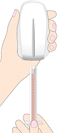

RÉSUMÉ DES CARACTÉRISTIQUES DU PRODUIT
ANSM - Mis à jour le : 13/12/2013
FLEXYESS 0,02 mg/3 mg, comprimé pelliculé
2. COMPOSITION QUALITATIVE ET QUANTITATIVE
Ethinylestradiol (sous forme de betadex clathrate)............................................................................. 0,020 mg
Drospirénone........................................................................................................................................ 3 mg
Pour un comprimé pelliculé.
Excipient : 46 mg de lactose.
Pour la liste complète des excipients, voir rubrique 6.1.
Le comprimé est rose pâle, rond à faces convexes, avec les lettres « DS » gravées dans un hexagone régulier sur l’une des faces.
Le comprimé a un diamètre de 6 mm et une épaisseur de 3 mm.
4.1. Indications thérapeutiques
4.2. Posologie et mode d'administration
Voie d’administration : voie orale.
Mode d’administration de FLEXYESS
FLEXYESS ne doit être utilisé qu’en association avec le distributeur de comprimés Clyk. Le distributeur de comprimés aidera l’utilisatrice à suivre son traitement.
Le manuel d’utilisation du distributeur de comprimés Clyk doit être lu attentivement avant utilisation et conservé pour pouvoir s’y référer ultérieurement.
Pour les instructions sur la préparation du distributeur de comprimés Clyk avant utilisation et sur la marche à suivre pour prélever un comprimé, voir la rubrique 6.6.
Un comprimé doit être pris chaque jour, à peu près à la même heure, si besoin avec un peu de liquide. La prise des comprimés doit toujours se faire de façon continue pendant un minimum de 24 jours.
Les comprimés de FLEXYESS peuvent être pris de façon continue pendant une période maximum de 120 jours, après laquelle une pause de 4 jours sans prise de comprimés doit être observée.
Le cycle de prise des comprimés se déroule en deux phases :
1. Une phase obligatoire (Jour 1 à Jour 24) :
Au début du traitement, les comprimés de FLEXYESS doivent être pris de façon continue pendant un minimum de 24 jours.
Le distributeur Clyk indique si une pause de 4 jours sans prise de comprimés peut être entamée. Pendant les 24 premiers jours (phase obligatoire), le distributeur de comprimés n’autorise pas à débuter une pause de 4 jours sans prise de comprimés.
2. Une phase flexible (Jour 25 à Jour 120) :
Au cours des jours 25 à 120, les comprimés peuvent être pris de façon continue pendant un maximum de 120 jours. Pendant cette période, l’utilisatrice peut décider elle-même d’observer ou non une pause de 4 jours.
Cette pause de 4 jours ne peut être entamée que si les comprimés ont été pris de façon continue pendant 24 jours.
Pendant la phase flexible, le distributeur de comprimés Clyk autorise l’utilisatrice à débuter une pause de 4 jours à tout moment.
Dans tous les cas, la pause de 4 jours doit débuter au plus tard au bout de 120 jours de prise continue des comprimés.
Une pause sans comprimés ne doit en aucun cas durer plus de 4 jours.
Le distributeur Clyk démarre automatiquement une pause de 4 jours au bout de 120 jours de prise continue des comprimés.
Les règles apparaissent habituellement pendant la pause de 4 jours et peuvent ne pas être terminées avant la prise du comprimé suivant.
Après chaque pause de 4 jours, un nouveau cycle de prise de 24 jours au minimum et de 120 jours au maximum débute.
À l’issue de la pause de 4 jours, le distributeur de comprimés Clyk rappelle automatiquement à l’utilisatrice qu’un nouveau cycle est entamé et qu’un comprimé doit à nouveau être pris chaque jour.
Au cours de la phase obligatoire, l’utilisatrice n’est pas autorisée à faire une pause de 4 jours, les comprimés devant être pris pendant un minimum de 24 jours.
Si des saignements et/ou spottings persistants se produisent pendant trois jours consécutifs au cours de la phase flexible (jours 25 à 120), il est conseillé d’observer une pause de 4 jours. Ceci peut permettre de réduire le nombre total de jours de saignements.
Cette pause de 4 jours ne peut être débutée que si les comprimés ont été pris de façon continue pendant au moins 24 jours.
Modalités d’instauration du traitement par FLEXYESS :
· Absence de contraception hormonale antérieure (le mois précédent)
La prise des comprimés doit commencer le 1er jour du cycle (c'est-à-dire le premier jour des règles). Il est possible de commencer au cours des jours 2 à 5, mais pendant le premier cycle, il est recommandé d’utiliser une méthode de contraception mécanique en complément pendant les 7 premiers jours de prise des comprimés.
Relais d’une méthode contraceptive estroprogestative (contraceptif oral combiné [COC], anneau vaginal ou patch transdermique)
Prendre le 1er comprimé de FLEXYESS de préférence le jour qui suit la prise du dernier comprimé actif (dernier comprimé contenant les substances actives) du précédent COC, ou au plus tard le jour qui suit la période habituelle d’arrêt des comprimés, ou le jour suivant la prise du dernier comprimé placebo de la précédente COC. En cas de relais d’un anneau vaginal ou d’un patch transdermique, prendre le 1er comprimé de FLEXYESS de préférence le jour du retrait ou au plus tard le jour prévu pour la nouvelle pose.
· Relais d'une contraception progestative seule (pilule progestative seule, forme injectable, implant) ou par un système intra-utérin (SIU) contenant un progestatif
Le relais peut se faire à tout moment du cycle s'il s'agit d'une pilule progestative seule ; le jour du retrait s'il s'agit d'un implant ou d'un SIU ; ou le jour prévu pour l'injection suivante s'il s'agit d'une forme injectable. Dans tous les cas, il doit être recommandé à l’utilisatrice d’employer une méthode de contraception mécanique complémentaire pendant les 7 premiers jours de prise de FLEXYESS.
· Après une interruption de grossesse au cours du premier trimestre
Dans ce cas, il est possible de commencer une contraception immédiatement. Il n'est pas nécessaire d'utiliser une méthode de contraception complémentaire.
· Après un accouchement ou une interruption de grossesse au cours du deuxième trimestre
Dans ce cas, il sera conseillé aux femmes de ne commencer une contraception qu'après 21 à 28 jours. Si cette contraception est démarrée plus tardivement, il leur sera recommandé d'utiliser une méthode de contraception mécanique complémentaire pendant les 7 premiers jours de traitement. Cependant, si des rapports sexuels ont déjà eu lieu, il convient de s'assurer de l'absence de grossesse avant le début de la prise du COC ou d'attendre le retour des règles.
En cas d'allaitement, voir rubrique 4.6.
Conduite à tenir en cas d'oubli d'un ou plusieurs comprimés
Un retard de moins de 24 heures dans la prise d'un comprimé ne réduit pas l'efficacité contraceptive. Il doit être conseillé aux femmes de prendre le comprimé oublié dès que cet oubli est constaté ; la prise des comprimés suivants s'effectuant à l'heure habituelle.
Si le retard est supérieur à 24 heures, l’effet contraceptif peut être diminué. En cas d'oubli de comprimés, les deux règles suivantes doivent être connues car nécessaires pour choisir la conduite à tenir :
1. la durée recommandée pour la période de pause sans prise de comprimés est de 4 jours. La prise de comprimés ne doit jamais être interrompue plus de 7 jours ;
2. 7 jours de prise ininterrompue du traitement sont nécessaires afin d’obtenir une inhibition correcte de l'axe hypothalamo-hypophyso-ovarien.
En conséquence, les conseils suivants pourront être donnés dans le cadre de la pratique quotidienne :
· Jours 1 à 7
Il devra être recommandé aux femmes de prendre le dernier comprimé oublié dès que l'oubli est constaté, même si cela implique la prise de deux comprimés en même temps. Les comprimés suivants devront être pris à l'heure habituelle. Une contraception mécanique complémentaire (par exemple : préservatifs) est cependant nécessaire pendant les 7 jours suivants. Si des rapports sexuels ont eu lieu au cours des 7 jours précédant l'oubli, il existe un risque de grossesse. Le risque de grossesse est d'autant plus élevé que le nombre de comprimés oubliés est important et que la date de l'oubli est proche de la période de pause sans prise de comprimés.
· Jours 8 à 24
Il devra être recommandé aux femmes de prendre le dernier comprimé oublié dès que l’oubli est constaté, même si cela implique la prise de deux comprimés en même temps. Les comprimés suivants devront être pris à l'heure habituelle. Si les comprimés ont été pris correctement au cours des 7 jours précédant le premier comprimé oublié, aucune mesure contraceptive complémentaire n'est nécessaire. En revanche, si ce n’est pas le cas ou en cas d'oubli de plusieurs comprimés, il devra être recommandé aux femmes de prendre des précautions complémentaires jusqu’à ce qu’elles aient pris les comprimés sans interruption pendant au moins 7 jours.
· Jours 25 à 120
Un risque de diminution de l'activité contraceptive peut apparaître en raison de la proximité éventuelle d’une période de pause sans hormone. Il est cependant possible d’éviter une diminution de l'effet contraceptif en ajustant le schéma de prise des comprimés. En observant l’une des deux options suivantes, il ne sera donc pas nécessaire d’utiliser des méthodes contraceptives complémentaires, à condition que tous les comprimés aient été pris correctement pendant les 7 jours précédant le premier comprimé oublié. Dans le cas contraire, il devra être recommandé aux femmes de suivre la première de ces deux options et d'utiliser également une méthode contraceptive complémentaire pendant les 7 jours suivants.
1. Il doit être recommandé aux femmes de prendre le dernier comprimé oublié dès que cet oubli est constaté, même si cela implique la prise de deux comprimés en même temps. Les comprimés suivants devront être pris à l'heure habituelle, jusqu’à avoir pris au moins 7 comprimés sans interruption.
2. La femme peut également choisir de faire une pause sans prise de comprimés de 4 jours, incluant les jours où elle a oublié de prendre des comprimés, afin de provoquer l’hémorragie de privation puis débuter un nouveau cycle de prise de FLEXYESS.
Chez une femme ayant oublié de prendre un (des) comprimé(s) et pour laquelle aucune hémorragie de privation n’est constatée durant la pause sans prise de comprimés suivante, l’éventualité d’une grossesse doit être envisagée.
Conduite à tenir en cas de troubles gastro-intestinaux
En cas de troubles gastro-intestinaux sévères (par exemple des vomissements ou une diarrhée), l'absorption d'un comprimé peut ne pas être complète ; des mesures contraceptives complémentaires doivent donc être prises.
Si des vomissements se produisent dans les 3-4 heures qui suivent la prise d'un comprimé, les mêmes consignes que celles données pour les oublis de comprimés doivent s'appliquer (voir rubrique 4.2). Si la femme ne veut pas modifier le schéma habituel de prise des comprimés, elle devra prendre le (ou les) comprimé(s) supplémentaire(s) nécessaire(s) dans le distributeur de comprimés.
Informations supplémentaires concernant les populations particulières
Enfants et adolescents
FLEXYESS n’est indiquée qu’après la puberté.
Patientes âgées
Sans objet. FLEXYESS n’est pas indiquée après la ménopause.
Patientes atteintes d’insuffisance hépatique
FLEXYESS est contre-indiquée chez les femmes atteintes d’affections hépatiques sévères. Voir également les rubriques 4.3 et 5.2.
Patientes atteintes d’insuffisance rénale
FLEXYESS est contre-indiquée chez les femmes atteintes d’insuffisance rénale sévère ou aiguë. Voir également les rubriques 4.3 et 5.2.
· thrombose veineuse ou antécédent de thrombose veineuse (thrombose veineuse profonde, embolie pulmonaire) ;
· thrombose artérielle ou antécédent de thrombose artérielle (par exemple infarctus du myocarde), ou signes précurseurs de thrombose (par exemple : angor et accident ischémique transitoire) ;
· accident vasculaire cérébral (AVC) ou antécédent d'AVC ;
· présence d'un facteur de risque sévère ou de plusieurs facteurs de risque de thrombose artérielle :
o diabète avec complications vasculaires,
o hypertension artérielle sévère,
o dyslipoprotéinémie sévère ;
· prédisposition héréditaire ou acquise à la thrombose veineuse ou artérielle (résistance à la protéine C activée (APC), déficit en antithrombine III, déficit en protéine C, déficit en protéine S, hyperhomocystéinémie et anticorps anti-phospholipides (anticorps anti-cardiolipine, anticoagulant lupique)) ;
· affection hépatique sévère ou antécédent d'affection hépatique sévère, en l'absence de normalisation des tests fonctionnels hépatiques ;
· insuffisance rénale sévère ou aiguë ;
· tumeur hépatique (bénigne ou maligne) évolutive ou antécédent ;
· tumeur maligne hormono-dépendante connue ou suspectée (par exemple: organes génitaux ou seins) ;
· saignements vaginaux d'origine inconnue ;
· antécédent de migraine avec signes neurologiques focalisés ;
· hypersensibilité à l'un des composants actifs ou l’un des excipients de FLEXYESS.
4.4. Mises en garde spéciales et précautions d'emploi
Chez une femme donnée, la présence de l'un des symptômes ou facteurs de risque mentionnés ci-dessous doit faire discuter avec la patiente le rapport bénéfice/risque d'une contraception orale combinée avant que la femme décide de commencer à l'utiliser.
En cas d'aggravation, d'exacerbation ou de survenue pour la première fois d’une de ces pathologies ou facteurs de risque, il sera recommandé aux femmes de contacter leur médecin. Le médecin devra ensuite décider si le COC doit être interrompu.
· Troubles circulatoires
L'utilisation de tout contraceptif oral combiné (COC) augmente le risque thromboembolique veineux par rapport à une non utilisation. Cette augmentation du risque thromboembolique veineux est plus importante pendant la première année d'utilisation d’un COC, que ce soit lors de l’initiation du traitement ou lors de sa reprise après un arrêt d’au moins un mois.
Chez les utilisatrices de contraceptifs oraux combinés faiblement dosés en estrogène (moins de 0,05 mg d’éthinylestradiol) sans facteur de risque thromboembolique connu, des études épidémiologiques ont montré que l’incidence d’un accident thromboembolique veineux allait d’environ 20 cas pour 100 000 années-femmes (pour les utilisatrices de COC contenant du lévonorgestrel) à 40 cas pour 100 000 années-femmes (pour les utilisatrices de COC contenant du désogestrel ou du gestodène). Chez les non utilisatrices, ce risque est de 5 à 10 cas pour 100 000 années-femmes et de 60 cas pour 100 000 grossesses.
Ces accidents sont d’évolution fatale dans 1 à 2 % des cas.
Des études épidémiologiques ont montré que le risque de thromboembolie veineuse associé aux COCs contenant de la drospirénone est plus élevé que celui associé aux COCs contenant du lévonorgestrel (dits COCs de deuxième génération) et pourrait être similaire à celui associé aux COCs contenant du désogestrel ou du gestodène (COCs dits de troisième génération).
Certaines études épidémiologiques ont également associé l'utilisation de COC à une augmentation du risque thromboembolique artériel (infarctus du myocarde, accident ischémique transitoire).
Chez les utilisatrices d'une contraception orale, de très rares cas de thrombose d'autres vaisseaux sanguins ont été observés, par exemple veines et artères hépatiques, mésentériques, rénales, cérébrales ou rétiniennes. Il n'existe pas de consensus sur la relation entre la survenue de ces accidents et l'utilisation de contraceptifs hormonaux.
Les symptômes d'événements thromboemboliques veineux ou artériels ou d'accident vasculaire cérébral peuvent être les suivants :
· douleur et/ou œdème inhabituel d'une jambe,
· douleur importante et brutale dans la poitrine, irradiant ou non dans le bras gauche,
· dyspnée brutale,
· toux de survenue brutale,
· céphalées inhabituelles, sévères, prolongées,
· cécité brutale, partielle ou totale,
· diplopie,
· troubles du langage ou aphasie,
· vertiges,
· collapsus avec ou sans convulsions focalisées,
· survenue brutale d’une parésie ou d’un engourdissement très important d'un hémicorps ou d’une partie du corps,
· troubles moteurs,
· douleur abdominale aiguë.
Chez les utilisatrices de COC, le risque de complications thromboemboliques veineuses augmente :
· avec l'âge ;
· en cas d'antécédents familiaux d'accidents thromboemboliques veineux (chez un frère, une sœur ou chez un parent relativement jeune). En cas de suspicion de prédisposition héréditaire, il convient de demander l'avis d'un spécialiste avant de prescrire un COC ;
· en cas d'immobilisation prolongée, d'intervention chirurgicale majeure, de chirurgie des membres inférieurs ou de traumatisme important. Dans ces cas, il est recommandé d'interrompre la contraception (au moins quatre semaines avant une intervention chirurgicale programmée) et de ne la reprendre que deux semaines au moins après la reprise d'une mobilisation complète. Un traitement anti-thrombotique devra être envisagé si la contraception orale n'a pas été interrompue à l’avance ;
· avec l'obésité (indice de masse corporelle supérieur à 30 kg/m2) ;
· la responsabilité des varices et des thrombophlébites superficielles dans la survenue ou l'aggravation d'une thrombose veineuse n'est pas établie.
Chez les utilisatrices de COC, le risque de complications thromboemboliques artérielles ou d'accident vasculaire cérébral augmente :
· avec l'âge,
· avec le tabagisme (il sera vivement recommandé aux femmes de plus de 35 ans de ne pas fumer si elles désirent prendre un COC),
· en cas de dyslipoprotéinémies,
· en cas d'hypertension artérielle,
· en cas de migraine,
· en cas d’obésité (indice de masse corporelle supérieur à 30 kg/m²),
· en cas d'antécédents familiaux d'accidents thromboemboliques artériels (chez un frère, une sœur ou chez un parent relativement jeune). En cas de suspicion de prédisposition héréditaire, il convient de demander l'avis d'un spécialiste avant de prescrire un COC.
· en présence de valvulopathies cardiaques,
· en cas de fibrillation auriculaire.
La présence d'un facteur de risque grave ou de plusieurs facteurs de risque de maladie veineuse ou artérielle peut également constituer une contre-indication. La possibilité d'un traitement anticoagulant pourra être envisagée. En cas de survenue d'un symptôme évocateur d’une thrombose, il doit être recommandé aux femmes utilisatrices d'un COC de contacter leur médecin. En cas de survenue ou de suspicion de thrombose, la prise du COC doit être interrompue. En raison du potentiel tératogène d'un traitement anti-coagulant (dérivés coumariniques), une autre méthode contraceptive appropriée doit être instaurée.
L'augmentation du risque thromboembolique survenant lors du post-partum doit être prise en compte (voir rubrique 4.6 « Grossesse et allaitement »).
Les autres pathologies pouvant entraîner des accidents vasculaires sont : le diabète sucré, le lupus érythémateux disséminé, le syndrome hémolytique et urémique, les entéropathies inflammatoires chroniques (maladie de Crohn et rectocolite hémorragique) et la drépanocytose.
L'augmentation de la fréquence ou de l'intensité de migraines lors de la prise d'un COC (prodrome éventuel d'un accident vasculaire cérébral) peut justifier son l'arrêt immédiat.
· Cancers
Certaines études épidémiologiques suggèrent que la prise de COC à long terme (> 5 ans) pourrait être associée à une augmentation du risque de cancer du col de l'utérus. Il n'est cependant pas établi dans quelle mesure cette augmentation du risque est liée à des facteurs confondants tels que le comportement sexuel et d'autres facteurs comme le papilloma virus humain (HPV).
Une méta-analyse de 54 études épidémiologiques a conclu qu’il existe une légère augmentation du risque relatif (RR = 1,24) de cancer du sein chez les femmes sous COC. Cette majoration du risque disparaît progressivement au cours des 10 ans qui suivent l’arrêt d'un COC. Le cancer du sein étant rare chez les femmes de moins de 40 ans, le nombre plus élevé de cancers diagnostiqués chez les utilisatrices habituelles ou nouvelles utilisatrices d'un COC reste faible par rapport au risque global de cancer du sein. Ces études ne permettent pas d'établir une relation de causalité. Il est possible que, chez les utilisatrices de COC, cette augmentation du risque soit due à un diagnostic plus précoce du cancer du sein, aux effets biologiques de cette contraception ou à l'association des deux. Les cancers du sein diagnostiqués chez les femmes utilisant ou ayant utilisé un COC ont tendance à être moins évolués cliniquement par rapport à ceux diagnostiqués chez des femmes n'en ayant jamais utilisé.
Dans de rares cas, des tumeurs bénignes du foie, et dans de plus rares cas encore, des tumeurs malignes du foie ont été rapportées chez des utilisatrices de COC. Dans des cas isolés, ces tumeurs ont conduit à des hémorragies intra-abdominales mettant en jeu le pronostic vital. Chez les femmes sous COC, la survenue de douleurs de la partie supérieure de l'abdomen, d'une augmentation du volume du foie ou de signes d'hémorragie intra-abdominale doit faire évoquer une tumeur hépatique.
L’utilisation de COC plus fortement dosés (50 µg éthinylestradiol) diminue le risque de cancer de l’endomètre et de l’ovaire. Ceci demande à être confirmé avec les COC plus faiblement dosés.
· Autres pathologies
FLEXYESS contient un progestatif qui est un antagoniste de l'aldostérone ayant des propriétés d'épargne potassique. Dans la plupart des cas, aucune augmentation de la kaliémie n'est attendue. Cependant, dans une étude clinique, une augmentation modérée non significative de la kaliémie a été observée chez des patientes présentant une insuffisance rénale légère à modérée lors de la prise concomitante de drospirénone et de médicaments épargneurs de potassium. De ce fait, il est recommandé de vérifier la kaliémie lors du premier cycle du traitement chez les patientes présentant une insuffisance rénale avec une kaliémie située dans la limite supérieure à la normale avant traitement, en particulier en cas de prise associée de médicaments épargneurs de potassium (voir également rubrique 4.5).
Chez les femmes atteintes d'hypertriglycéridémie ou ayant des antécédents familiaux d'hypertriglycéridémie, un risque accru de pancréatite peut survenir en cas d'utilisation d'un COC.
Une augmentation modérée de la pression artérielle a été observée chez de nombreuses femmes sous COC mais les cas cliniquement significatifs sont rares. Une interruption immédiate du COC n’est justifiée que dans ces rares cas. La persistance de chiffres tensionnels élevés ou le non contrôle des chiffres tensionnels par un traitement antihypertenseur chez une femme hypertendue prenant un COC doit faire interrompre celui-ci. Le COC pourra éventuellement être repris après normalisation des chiffres tensionnels par un traitement antihypertenseur.
La survenue ou l'aggravation des pathologies suivantes a été observée au cours de la grossesse ou chez des femmes prenant des COC, bien que la responsabilité des COC n'ait pu être établie : ictère et/ou prurit dû à une cholestase, lithiase biliaire, porphyrie, lupus érythémateux disséminé, syndrome hémolytique et urémique, chorée de Sydenham, herpès gravidique, hypoacousie par otosclérose.
Chez les femmes présentant un angioedème héréditaire, les estrogènes exogènes peuvent induire ou aggraver des symptômes d’angioedème.
La survenue d'anomalies hépatiques aiguës ou chroniques peut nécessiter l'arrêt du COC jusqu'à la normalisation des paramètres hépatiques. La récidive d'un ictère cholestatique et/ou d'un prurit liés à une cholestase survenue au cours d'une grossesse précédente ou de la prise antérieure d'hormones stéroïdiennes doit faire arrêter le COC.
Bien que les COC puissent avoir un effet sur la résistance périphérique à l'insuline et la tolérance au glucose, il n'est cependant pas obligatoire de modifier le traitement chez des diabétiques utilisant un COC faiblement dosé (contenant moins de 0,05 mg d'éthinylestradiol). Les femmes diabétiques doivent cependant être étroitement surveillées, en particulier lors de l'instauration d'un COC.
Des cas d'aggravations de dépression endogène, d'épilepsie, de maladie de Crohn et de rectocolite hémorragique ont été observés lors de la prise de COC.
Un chloasma peut survenir, en particulier chez les femmes ayant des antécédents de chloasma gravidique. Les femmes ayant une prédisposition au chloasma sous COC doivent éviter de s'exposer au soleil ou aux rayons ultra-violets.
Chaque comprimé de ce médicament contient 46 mg de lactose. Cette quantité doit être prise en compte chez les patientes atteintes d’une pathologie héréditaire rare telles qu’une intolérance au galactose, un déficit en lactase de Lapp ou un syndrome de malabsorption du glucose et du galactose ou sous un régime sans lactose.
Examen clinique
L'instauration ou la reprise d'un traitement par FLEXYESS doit être précédée du recueil complet des antécédents médicaux (y compris les antécédents familiaux). Une éventuelle grossesse devra être écartée. Un examen clinique complet, incluant une mesure de la pression artérielle, doit être effectué en tenant compte des contre-indications (voir rubrique 4.3) et des mises en garde (voir rubrique 4.4). Il sera conseillé aux femmes de lire attentivement la notice du produit et d’en respecter les recommandations. La fréquence et la nature des examens pratiqués tiendront compte des recommandations médicales établies et seront adaptées à chaque patiente.
Les femmes doivent être informées que les contraceptifs oraux ne protègent pas contre l’infection par le VIH (SIDA) ou les autres maladies sexuellement transmissibles.
Diminution de l'efficacité
L'efficacité des COCs peut être diminuée en cas d'oubli de comprimés (voir rubrique 4.2), de troubles gastro-intestinaux durant la prise de comprimés (voir rubrique 4.2) ou de prise concomitante de certains traitements (voir rubrique 4.5).
Troubles du cycle
La flexibilité du traitement est conçue pour reporter les règles. Chez de nombreuses femmes, le report des règles est limité par la survenue de spottings ou de métrorragies. L’apparition de ce type de saignements est irrégulière et imprévisible. Seules les hémorragies de privation qui suivent la pause de 4 jours sans prise de comprimés sont prévisibles. La flexibilité du traitement par FLEXYESS permet de programmer les hémorragies de privation pendant la phase flexible du cycle de prise (entre les jours 25 et 120).
Comme avec tous les COCs, des saignements irréguliers (spottings ou métrorragies) peuvent survenir, y compris durant la phase obligatoire du cycle de prise (jours 1 à 24), en particulier au cours des premiers mois d’utilisation. C’est pourquoi l’évaluation des saignements irréguliers n’est pertinente qu’après une période d’adaptation d’environ trois mois.
Si les saignements irréguliers persistent encore après le déclenchement des hémorragies de privation, c’est-à-dire si les saignements se prolongent de façon significative après la pause de 4 jours sans prise de comprimés ou si l’importance des saignements est significativement supérieure au niveau habituel, des causes non hormonales devront être envisagées et des examens diagnostiques adéquats devront être entrepris afin d’exclure l’existence d’une tumeur ou d’une grossesse. Ces mesures pourront inclure un curetage.
Chez certaines femmes, les hémorragies de privation peuvent ne pas survenir pendant la pause sans comprimés. Si le COC a été pris conformément aux instructions de la rubrique 4.2, il est peu probable que la femme soit enceinte. Cependant, si le COC n’a pas été pris conformément à ces instructions avant la première absence de l’hémorragie de privation ou si l’hémorragie de privation est absente à deux reprises successives, l’éventualité d’une grossesse doit être écartée avant de poursuivre la prise du COC.
Lors du traitement par FLEXYESS, l’hémorragie de privation ne se produit pas forcément toutes les 4 semaines ; sa fréquence peut être réduite et l’intervalle entre chaque hémorragie de privation peut atteindre un maximum de 120 jours (selon le moment choisi par l’utilisatrice pour débuter une pause de 4 jours sans prise de comprimés). L’absence d’hémorragie de privation ne peut donc pas être interprétée comme le signe d’une grossesse imprévue et, de ce fait, les grossesses imprévues peuvent être difficiles à identifier. Ceci peut être particulièrement important pour les femmes prenant des médicaments tératogènes. Bien qu’une grossesse soit peu probable lorsque FLEXYESS est pris conformément aux instructions, un test de grossesse devra être effectué dès lors qu’une grossesse est suspectée, quelle qu’en soit la raison.
4.5. Interactions avec d'autres médicaments et autres formes d'interactions
· Influence d'autres médicaments sur FLEXYESS :
Les interactions entre les contraceptifs oraux et d'autres médicaments peuvent induire des métrorragies et/ou conduire à l'échec de la contraception. Les interactions suivantes ont été retrouvées dans la littérature.
Avec le métabolisme hépatique
Des interactions peuvent se produire avec des médicaments inducteurs des enzymes hépatiques, ce qui peut conduire à une augmentation de la clairance des hormones sexuelles (par exemple, la phénytoïne, les barbituriques, la primidone, la carbamazépine, la rifampicine, le bosentan et les médicaments contre le VIH [par exemple ritonavir, névirapine] et aussi de façon possible avec l'oxcarbazépine, le topiramate, le felbamate, la griséofulvine et les préparations contenant du millepertuis [Hypericum perforatum, plante médicinale]). En général, l’induction enzymatique maximale est observée au bout d’environ 10 jours de traitement ; cependant, elle peut se prolonger au moins 4 semaines après l'arrêt du traitement.
Interférences avec la circulation entéro-hépatique
Des échecs de la contraception ont également été rapportés avec les antibiotiques de la classe des pénicillines et des tétracyclines. Le mécanisme de cet effet n'est pas connu.
Conduite à tenir
Les femmes prenant pendant une courte durée un médicament appartenant à l'une des classes mentionnées ci-dessus ou d'autres substances actives (médicaments inducteurs enzymatiques) autres que la rifampicine, doivent utiliser temporairement, en plus de leur COC, pendant toute la durée de ce traitement et pendant les 7 jours qui suivent l'arrêt du traitement, une méthode contraceptive mécanique complémentaire.
En cas de traitement par la rifampicine, les mêmes précautions s'appliquent mais la contraception mécanique doit être poursuivie 28 jours après l'arrêt de l'antibiotique.
Chez les femmes prenant un traitement à long terme par des substances actives ayant une action inductrice sur les enzymes hépatiques, une autre méthode de contraception fiable, non hormonale est recommandée.
Les femmes sous traitement par antibiotiques (autre que la rifampicine, voir ci-dessus) doivent utiliser une contraception mécanique pendant les 7 jours qui suivent l'arrêt du traitement.
Pendant la période d’utilisation de la contraception mécanique, la femme ne devra pas observer de pause de 4 jours sans prise de comprimés.
La formation des principaux métabolites plasmatiques de la drospirénone n'implique pas le cytochrome P450. Les inhibiteurs de ce système enzymatique ne devraient donc pas avoir d'influence sur le métabolisme de la drospirénone.
· Influence de FLEXYESS sur d'autres médicaments
Les contraceptifs oraux peuvent modifier le métabolisme de certaines autres substances actives. Les concentrations plasmatiques et tissulaires peuvent donc être soit augmentées (ex : ciclosporine) ou diminuées (ex : lamotrigine).
Chez des femmes volontaires, des études d'inhibition in vitro et des études d'interaction in vivo réalisées avec l'oméprazole, la simvastatine et le midazolam comme marqueur, ont montré qu'une interaction de la drospirérone à des doses de 3 mg avec le métabolisme d'autres médicaments était peu probable.
· Autres interactions
Chez les patientes ayant une fonction rénale normale, la prise concomitante de drospirénone avec un IEC ou un AINS n'a pas montré d'effet significatif sur la kaliémie. Néanmoins, l'utilisation concomitante de FLEXYESS avec les antagonistes de l'aldostérone ou des diurétiques épargneurs de potassium n'a pas été étudiée. Dans ce cas, un dosage de la kaliémie pendant le premier cycle de traitement est recommandé (voir également la rubrique 4.4).
· Examens biologiques
L'utilisation de contraceptifs stéroïdiens peut modifier les résultats de certains examens biologiques tels que : les tests fonctionnels hépatiques, thyroïdiens, surrénaliens et rénaux, le taux plasmatique des protéines (porteuses) comme la Corticosteroid-Binding Globulin (CBG) et des fractions lipidiques/lipoprotéiniques, les paramètres du métabolisme glucidique, les paramètres de la coagulation et de la fibrinolyse. Les modifications restent en général dans les limites de la normale. En raison de sa légère activité anti-minéralocorticoïde, la drospirénone accroît l'activité de la rénine plasmatique et l'aldostéronémie.
Des études chez l'animal ont montré la présence d'effets indésirables au cours de la grossesse et de l'allaitement (voir rubrique 5.3). D'après ces données, un effet indésirable dû à l'activité hormonale des principes actifs ne peut être exclu. Cependant, sur la base de l'expérience de l'utilisation des COC pendant la grossesse, un tel effet indésirable n'a pas été observé dans l’espèce humaine.
Les données disponibles concernant l'utilisation de FLEXYESS au cours de la grossesse sont trop peu nombreuses pour permettre de conclure à d'éventuels effets néfastes de FLEXYESS sur la grossesse ou sur la santé du fœtus ou du nouveau-né. Aucune donnée épidémiologique ne permet à ce jour de conclure.
Lors d’un traitement par FLEXYESS, l’hémorragie de privation ne survient normalement pas toutes les 4 semaines mais à une fréquence plus faible avec des intervalles pouvant atteindre un maximum de 120 jours. Une grossesse non désirée peut être difficile à détecter. Si pour une raison quelconque, une grossesse est suspectée chez une femme prenant FLEXYESS, un test de grossesse doit être réalisé.
Les COC pouvant influer sur la quantité de lait maternel et sa composition, ceux-ci sont généralement déconseillés jusqu'à la fin du sevrage. L'utilisation de COC peut s'accompagner d'une excrétion de faibles quantités de ces contraceptifs stéroïdiens et/ou de leurs métabolites dans le lait pouvant avoir un effet chez l'enfant.
4.7. Effets sur l'aptitude à conduire des véhicules et à utiliser des machines
Les effets indésirables les plus fréquemment rapportés avec FLEXYESS sont les nausées et les douleurs mammaires. Ces effets surviennent chez plus de 3 % des femmes utilisant FLEXYESS.
Les effets indésirables graves sont les accidents thromboemboliques artériels et veineux, le cancer du sein et l’hyperplasie nodulaire focale.
Tableau récapitulatif des effets indésirables
Les fréquences des effets indésirables reportées dans le tableau ci-dessous incluent les effets indésirables de YAZ combinés aux effets indésirables rapportés lors des essais cliniques avec FLEXYESS (N=2623). Dans les cas où les effets indésirables ont été rapportés dans les études des deux programmes de développement clinique et lorsque la fréquence de survenue sous FLEXYESS était supérieure, la fréquence sous FLEXYESS a été reportée.
|
Classe de systèmes d’organes (MedDRA version 9.1) |
Fréquent (≥ 1/100 à < 1/10) |
Peu fréquent (≥ 1/1000 à < 1/100) |
Rare (≥ 1/10000 à < 1/1000) |
Fréquence inconnue (ne peut être estimée à partir des données disponibles) |
|
Infections et infestations |
|
|
Candidose |
|
|
Affections hématologiques et du système lymphatique |
|
|
Anémie Thrombocytémie |
|
|
Affections du système immunitaire |
|
|
Réaction allergique |
Hypersensibilité |
|
Affections endocriniennes |
|
|
Troubles endocriniens |
|
|
Troubles du métabolisme et de la nutrition |
|
|
Augmentation de l’appétit Anorexie Hyperkaliémie Hyponatrémie |
|
|
Affections psychiatriques |
Labilité émotionnelle Dépression Diminution de la libido |
Nervosité Somnolence |
Anorgasmie Insomnie |
|
|
Affections du système nerveux |
Maux de tête |
Etourdissements Paresthésie |
Vertige Tremblements |
|
|
Affections oculaires |
|
|
Conjonctivite Sécheresse oculaire Troubles oculaires |
|
|
Affections cardiaques |
|
|
Tachycardie |
|
|
Affections vasculaires |
Migraine |
Varices Hypertension |
Phlébite Troubles vasculaires Epistaxis Syncope |
|
|
Affections gastro-intestinales |
Nausées |
Douleur abdominale Vomissements Dyspepsie Flatulence Gastrite Diarrhée |
Distension abdominale Troubles gastro-intestinaux Réplétion gastro-intestinale Hernie hiatale Candidose buccale Constipation Sécheresse buccale |
|
|
Affections hépatobiliaires |
|
|
Douleur biliaire Cholécystite |
|
|
Affections de la peau et du tissu sous-cutané |
|
Acné Prurit Eruption cutanée (rash) |
Chloasma Eczéma Alopécie Dermatite acnéiforme Sécheresse de la peau Erythème noueux Hypertrichose Troubles cutanés Vergetures Dermatite de contact Dermatite photosensible Nodule cutané |
Erythème polymorphe |
|
Affections musculo-squelettiques et systémiques |
|
Douleur dorsale Douleur dans les membres Crampes musculaires |
|
|
|
Affections des organes de reproduction et du sein |
Douleur mammaire Métrorragie* Aménorrhée |
Candidose vaginale Douleur pelvienne Augmentation du volume mammaire Sein fibrokystique Hémorragie utérine / vaginale* Pertes génitales Bouffées de chaleur Vaginite Troubles menstruels Dysménorrhée Hypoménorrhée Ménorragie Sécheresse vaginale Frottis cervical douteux |
Dyspareunie Vulvovaginite Saignement postcoïtal Hémorragie de privation Kyste mammaire Hyperplasie mammaire Néoplasie mammaire Polype cervical Atrophie de l’endomètre Kyste ovarien Augmentation de volume de l’utérus |
|
|
Troubles généraux et anomalies au site d’administration |
|
Asthénie Sudation excessive Œdèmes (œdème généralisé, œdèmes périphériques, œdème facial) |
Malaise |
|
|
Investigations |
|
Prise de poids |
Perte de poids |
|
* les saignements irréguliers disparaissent généralement avec la poursuite du traitement.
Concernant les événements thromboemboliques veineux (thrombose veineuse profonde, embolie pulmonaire) et artériels (infarctus du myocarde, accident vasculaire cérébral), le cancer du sein, l’hyperplasie nodulaire focale (tumeur hépatique bénigne) et la migraine, voir également les rubriques 4.3 et 4.4.
Description de certains effets indésirables particuliers
Les effets indésirables dont la fréquence est très faible ou dont l’apparition des symptômes est tardive et qui sont considérés comme liés au groupe des contraceptifs oraux combinés sont présentés ci-dessous (voir également les rubriques 4.3 et 4.4) :
Tumeurs
· La fréquence de diagnostic de cancer du sein est très légèrement augmentée chez les utilisatrices de contraceptifs oraux. Comme le cancer du sein est rare chez les femmes de moins de 40 ans, cette augmentation est faible par rapport au risque général de cancer du sein. La relation de causalité avec l'utilisation d'un COC reste inconnue.
· Tumeurs hépatiques (bénignes et malignes)
Autres affections
· Érythème noueux, érythème polymorphe
· Femmes présentant une hypertriglycéridémie (risque accru de pancréatite lors de l’utilisation de COCs)
· Hypertension
· Apparition ou aggravation d’affections pour lesquelles l’association avec l’utilisation de COC n’est pas établie : ictère et/ou prurit lié à une cholestase ; formation de calculs biliaires ; porphyrie ; lupus érythémateux disséminé ; syndrome hémolytique et urémique ; chorée de Sydenham ; herpès gestationnel ; perte auditive liée à une otosclérose
· Chez les femmes atteintes d’angiœdème héréditaire, les œstrogènes exogènes peuvent induire ou exacerber les symptômes de l’angiœdème
· Troubles de la fonction hépatique
· Modifications de la tolérance du glucose ou effets sur la résistance périphérique à l’insuline
· Maladie de Crohn, recto-colite hémorragique
· Chloasma
· Hypersensibilité (y compris des symptômes tels qu’une éruption cutanée [rash], de l’urticaire)
Interactions
Des métrorragies et/ou un échec de la contraception peuvent être la conséquence d’interactions entre d’autres médicaments (inducteurs enzymatiques, certains antibiotiques) et les contraceptifs oraux (voir rubrique 4.5).
Déclaration des effets indésirables suspectés
La déclaration des effets indésirables suspectés après autorisation du médicament est importante. Elle permet une surveillance continue du rapport bénéfice/risque du médicament. Les professionnels de santé déclarent tout effet indésirable suspecté via le système national de déclaration : Agence nationale de sécurité du médicament et des produits de santé (Ansm) et réseau des Centres Régionaux de Pharmacovigilance - Site internet: www.ansm.sante.fr
5. PROPRIETES PHARMACOLOGIQUES
5.1. Propriétés pharmacodynamiques
Classe pharmacothérapeutique : Progestatifs et Estrogènes. Associations Fixes
Code ATC : G03AA12
Lors des essais cliniques avec FLEXYESS menés dans l’Union Européenne, au Canada et aux États-Unis, les indices de Pearl suivants ont été calculés :
UE/Canada : indice de Pearl pour l’échec de la méthode : 0,59 (limite supérieure de l’intervalle de confiance bilatéral à 95 % : 1,22).
Indice de Pearl global (échec de la méthode + échec de la patiente) : 0,63 (limite supérieure de l’intervalle de confiance bilatéral à 95 % : 1,24).
États-Unis : indice de Pearl global (échec de la méthode + échec de la patiente) : 1,65 (limite supérieure de l’intervalle de confiance bilatéral à 95 % : 2,65).
L'effet contraceptif de FLEXYESS repose sur l'interaction de différents facteurs, les plus importants étant l'inhibition de l'ovulation et les modifications de l'endomètre.
FLEXYESS est un COC associant l'éthinylestradiol et un progestatif, la drospirénone. Aux doses thérapeutiques, cette dernière possède également des propriétés anti-androgéniques et une légère activité anti-minéralocorticoïde. Elle n'a aucune activité œstrogénique, glucocorticoïde ou anti-glucocorticoïde. La drospirénone est donc dotée d'un profil pharmacologique proche de celui de l'hormone naturelle, la progestérone.
Les études cliniques indiquent que la légère activité anti-minéralocorticoïde de YAZ entraîne un effet anti-minéralocorticoïde modéré.
FLEXYESS est un COC dont le schéma thérapeutique est prolongé et flexible, basé sur le COC classique YAZ. Par conséquent, la durée de prise des comprimés sans interruption est donc de 24 jours au minimum et la durée de la période de pause sans prise de comprimés est de 4 jours.
Une étude multicentrique, ouverte, randomisée, en groupes parallèles (UE/Canada) qui a comparé FLEXYESS à YAZ a montré que la flexibilité du schéma thérapeutique, utilisé pour obtenir des périodes sans saignements les plus longues possibles, permettait de réduire le nombre total de jours de saignements menstruels par an de 66 jours en moyenne (YAZ) à 41 jours en moyenne (FLEXYESS).
Deux études multicentriques, randomisées, en double aveugle, contrôlées contre placebo ont été menées pour évaluer l’efficacité et la tolérance de YAZ chez des femmes ayant une acné vulgaire modérée.
Après six mois de traitement, comparé au placebo, YAZ a montré une réduction plus marquée, statistiquement significative, de 15,6 % (49,3 % contre 33,7 %) du nombre de lésions inflammatoires, 18,5 % (40,6 % contre 22,1 %) de lésions non inflammatoires et 16,5 % (44,6 % contre 28,1 %) du nombre total de lésions. De plus, le pourcentage de femmes ayant présenté un score « exempt » ou « pratiquement exempt » selon l’échelle globale d’évaluation par l’investigateur ISGA (Investigator’s Static Global Assessment) était plus élevé, 11,8 % (18,6 % contre 6,8 %).
5.2. Propriétés pharmacocinétiques
Absorption
Administrée par voie orale, l'absorption de la drospirénone est rapide et presque complète. Après administration unique, le pic de concentration sérique de la substance active, d'environ 38 ng/ml, est atteint en une à deux heures environ. La biodisponibilité est comprise entre 76 et 85 %. La prise concomitante d'aliments n'a pas d'influence sur la biodisponibilité de la drospirénone.
Distribution
Après administration orale, les concentrations sériques de la drospirénone diminuent avec une demi-vie terminale de 31 heures. La drospirénone se lie à l'albumine sérique, mais pas à la SHBG (Sex Hormone Binding Globulin) ni à la CBG (Corticosteroid Binding Globulin). Seulement 3 à 5 % des concentrations sériques totales de la substance active se retrouvent sous forme de stéroïde libre. L'augmentation de la SHBG induite par l'éthinylestradiol n'influe pas sur la liaison de la drospirénone aux protéines plasmatiques. Le volume de distribution apparent moyen de la drospirénone est de 3,7 ± 1,2 l/kg.
Métabolisme
Après administration orale, la drospirénone est largement métabolisée. Les principaux métabolites plasmatiques sont la forme acide de la drospirénone, formée par ouverture du noyau lactone et le 3-sulfate de 4,5-dihydrodrospirénone tous deux formés sans implication du cytochrome P450. La drospirénone est peu métabolisée par le cytochrome P450 3A4 ; in vitro, elle inhibe cette enzyme ainsi que le cytochrome P450 1A1, le cytochrome P450 2C9 et le cytochrome P450 2C19.
Élimination
La clairance métabolique sérique de la drospirénone est de 1,5 ± 0,2 ml/min/kg. La drospirénone n'est excrétée sous forme inchangée qu'à l'état de traces. Les métabolites de la drospirénone sont excrétés par voies fécale et urinaire selon un rapport de 1,2 à 1,4. La demi-vie de l'excrétion urinaire et fécale des métabolites est d'environ 40 h.
Conditions à l'état d'équilibre
Au cours d'un cycle de traitement, à l'état d'équilibre, les concentrations sériques maximales de la drospirénone (environ 70 ng/ml) sont atteintes au bout de 8 jours de traitement. Les taux sériques de drospirénone s'accumulent selon un facteur d'environ 2 à 3 en fonction du rapport de la demi-vie terminale et de l'intervalle entre deux prises.
Populations particulières
Effet de l'insuffisance rénale
A l'état d'équilibre, chez les femmes présentant une insuffisance rénale légère (clairance de la créatinine Clcr = 50-80 ml/min), les concentrations sériques de drospirénone sont comparables à celles de femmes présentant une fonction rénale normale. Chez les femmes présentant une insuffisance rénale modérée (Clcr = 30-50 ml/min), les concentrations sériques de drospirénone sont en moyenne supérieures de 37 % à celles observées chez des femmes ayant une fonction rénale normale. Le traitement par la drospirénone est également bien toléré par les femmes présentant une insuffisance rénale légère à modérée. Aucun effet cliniquement significatif d'un traitement par drospirénone sur la kaliémie n'a été observé.
Effet de l'insuffisance hépatique
Dans une étude à dose unique, la clairance orale (Cl/F) était diminuée d'environ 50 % chez les volontaires ayant une insuffisance hépatique modérée par rapport à celles présentant une fonction hépatique normale. Cette diminution ne s’est pas traduite par une différence apparente en terme de kaliémie. Aucune augmentation des concentrations sériques de potassium au-dessus de la limite supérieure de la normale n'a été observée en cas de diabète et de traitement associé par la spironolactone (deux facteurs de risque d'hyperkaliémie). Il peut être conclu que la drospirénone est bien tolérée chez les patientes présentant une insuffisance hépatique légère ou modérée (Child-Pugh B).
Groupes ethniques
Aucune différence cliniquement significative des paramètres pharmacocinétiques de la drospirénone ou de l'éthinylestradiol n'a été observée entre les femmes japonaises et caucasiennes.
· Ethinylestradiol
Absorption
Après administration orale, l'absorption de l'éthinylestradiol est rapide et complète. Après administration orale unique, le pic de concentration sérique de 33 pg/ml est atteint en 1 à 2 heures. La biodisponibilité absolue résultant d'une conjugaison pré-systémique et d'un premier passage est d'environ 60 %. La prise concomitante de nourriture diminue la biodisponibilité de l'éthinylestradiol d'environ 25 % chez les sujets étudiés alors qu'aucun changement n'est observé chez les autres.
Distribution
Les taux sériques d'éthinylestradiol diminuent en 2 phases : la phase terminale est caractérisée par une demi-vie d'environ 24 heures. L'éthinylestradiol se lie fortement mais non spécifiquement à l'albumine sérique (environ 98,5 %) ; il induit une augmentation des concentrations sériques de SHBG (Sex Hormone Binding Globulin) et de CBG (Corticosteroid Binding Globulin). Le volume apparent de distribution est d'environ 5 l/kg.
Métabolisme
L'éthinylestradiol est soumis à une conjugaison pré-systémique dans l'intestin grêle et dans le foie. L'éthinylestradiol est principalement métabolisé par hydroxylation aromatique et est transformé en de nombreux métabolites hydroxylés et méthylés. Ceux-ci sont présents sous forme de métabolites libres et de conjugués glucuronés et sulfonés. La clairance métabolique plasmatique de l'éthinylestradiol est d’environ 5 ml/min/kg.
Elimination
L'éthinylestradiol n'est pas excrété de façon significative sous forme inchangée. Les métabolites de l'éthinylestradiol sont excrétés avec un ratio d'excrétion rénale/biliaire de 4/6. La demi-vie d'excrétion des métabolites est d'environ 1 jour.
Conditions à l'état d'équilibre
L'état d'équilibre est atteint au bout de 14 jours environ de prise quotidienne sans interruption des comprimés. L'éthinylestradiol s'accumule dans le sérum selon un facteur d'environ 1,5 à 2,3.
5.3. Données de sécurité préclinique
Lactose monohydraté
Amidon de maïs
Stéarate de magnésium (E 470b)
Pelliculage :
Hypromellose (E 464)
Talc (E 553b)
Dioxyde de titane (E 171)
Oxyde de fer rouge (E 172)
Après ouverture de la cartouche de comprimés : 40 jours.
6.4. Précautions particulières de conservation
Pas de précautions particulières de conservation.
Dès que la cartouche a été retirée de la plaquette thermoformée, elle doit être insérée dans le distributeur de comprimés et les comprimés doivent être utilisés immédiatement.
6.5. Nature et contenu de l'emballage extérieur
1 x 30 comprimés pelliculés et un distributeur de comprimés.
Recharges :
1 x 30 comprimés pelliculés
3 x 30 comprimés pelliculés
4 x 30 comprimés pelliculés
12 x 30 comprimés pelliculés
Les comprimés pelliculés sont fournis dans une cartouche. Chaque cartouche contient 30 comprimés rose pâle et est conditionnée dans une plaquette formée à froid constituée de deux feuillets multicouches (OPA/Al/PE).
Les cartouches sont blanches/translucides et sont composées d’un polymère de méthyl méthacrylate/acrylonitrile/butadiène/styrène (MABS), de poly-butylène téréphtalate (PBT) et de poly-oxyméthylène (POM).
Le distributeur de comprimés (dans le coffret d‘initiation uniquement) est constitué d’un boitier en MABS avec des parties souples constituées de copolymères à blocs à base de styrène/éthylène/butylène/styrène (SEBS). La cartouche glisse dans une partie tubulaire du boitier interne constituée de polyarylamide combiné à des fibres de verre.
Toutes les présentations peuvent ne pas être commercialisées.
6.6. Précautions particulières d’élimination et de manipulation
FLEXYESS ne doit être utilisé qu’en association avec le distributeur Clyk.
Le manuel d’utilisation du distributeur doit être lu attentivement avant et pendant l’utilisation du distributeur de comprimés.
Présentation générale du distributeur :
|
Indicateur de l’Heure de référence
Montre l’heure à laquelle vous devez prendre votre pilule.
Écran d’affichage
Affiche l’écran d’accueil et les écrans MENU associés.
Bouton MENU
Vous permet de naviguer dans les écrans MENU.
Bouton OK
Permet de confirmer une action, comme l'instauration d’une pause de 4 jours ou le changement de l’état du rappel sonore.
Parties souples
Zones du distributeur au niveau desquelles vous appuyez pour prélever une pilule.
Ejection de la cartouche
Permet d’éjecter la cartouche du distributeur
Zone de délivrance de la pilule
Endroit au niveau duquel les pilules sortent.
Fonctions principales :
Les fonctions principales du distributeur Clyk sont expliquées sur la Carte Aide-Mémoire.
Activation d’un nouveau distributeur de comprimés :
La cartouche (contenant 30 comprimés) doit être sortie de son emballage et introduite IMMÉDIATEMENT dans le distributeur de comprimés. Pour cela, l’extrémité étroite de la cartouche doit être insérée dans le distributeur en tenant ce dernier de façon à ce que la fenêtre du distributeur (ainsi que les comprimés de la cartouche) soit visible (voir la Fig. 1). La cartouche DOIT être poussée jusqu’au bout.
Fig. 1 : préparation du distributeur de comprimés avant utilisation

Le distributeur enregistrera automatiquement l’heure à laquelle le premier comprimé a été prélevé et la définira comme Heure de référence. En conséquence, l’utilisatrice doit :
· s’assurer de déballer et d’insérer la cartouche uniquement le jour où elle souhaite commencer à prendre sa pilule ;
· veiller à sortir sa première pilule à une heure à laquelle il sera pratique pour elle de prendre sa pilule tous les jours.
Toutes les 24 heures, le distributeur indiquera qu’il est l’heure de prendre le comprimé suivant.
Pour prélever un comprimé :
Les deux parties souples du distributeur doivent être pressées simultanément d’une main afin de prélever un comprimé qui sera déposé dans l’autre main.
Remplacement de la cartouche :
Dans le cadre d’une utilisation normale, la cartouche ne peut être retirée que lorsqu’elle est vide. La cartouche vide peut être libérée en appuyant sur le bouton d’éjection de la cartouche. Le distributeur conserve toutes les informations relatives au cycle en cours et une nouvelle cartouche pleine peut être introduite comme expliqué plus haut.
Tout médicament non utilisé ou déchet doit être éliminé conformément à la réglementation en vigueur.
7. TITULAIRE DE L’AUTORISATION DE MISE SUR LE MARCHE
220 AVENUE DE LA RECHERCHE
59120 LOOS
8. NUMERO(S) D’AUTORISATION DE MISE SUR LE MARCHE
· 34009 275 841 6 9 : boite contenant 1 cartouche de 30 comprimés et un distributeur de comprimés.
· 34009 275 884 7 1 : boite contenant 1 cartouche de 30 comprimés.
· 34009 275 885 3 2 : boite contenant 3 cartouches de 30 comprimés.
9. DATE DE PREMIERE AUTORISATION/DE RENOUVELLEMENT DE L’AUTORISATION
Date de première autorisation :{JJ mois AAAA}
Date de dernier renouvellement :{JJ mois AAAA}
10. DATE DE MISE A JOUR DU TEXTE
Sans objet.
12. INSTRUCTIONS POUR LA PREPARATION DES RADIOPHARMACEUTIQUES
Sans objet.
Liste I.